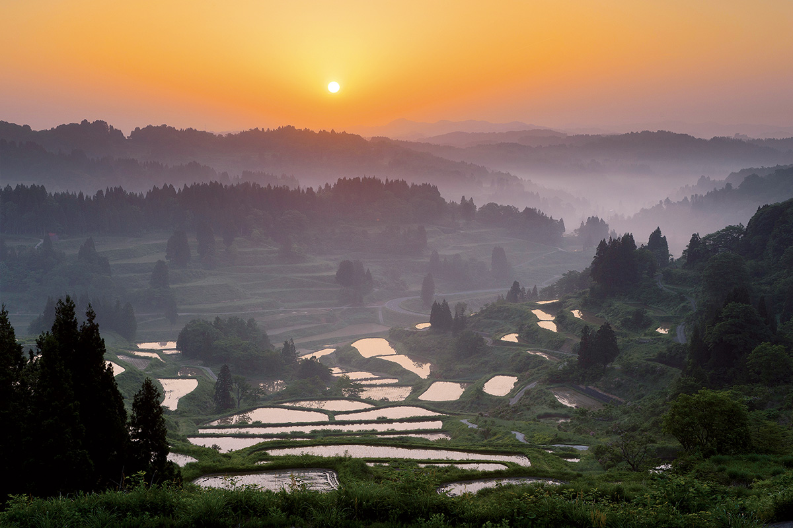
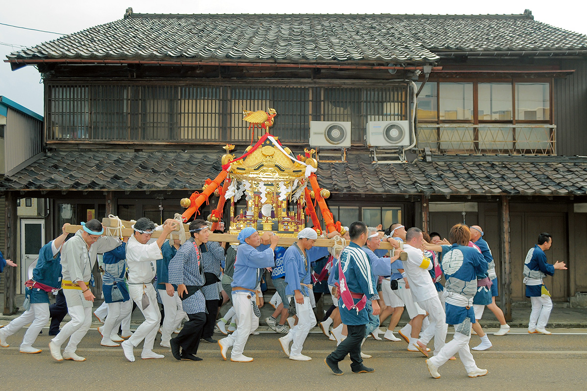
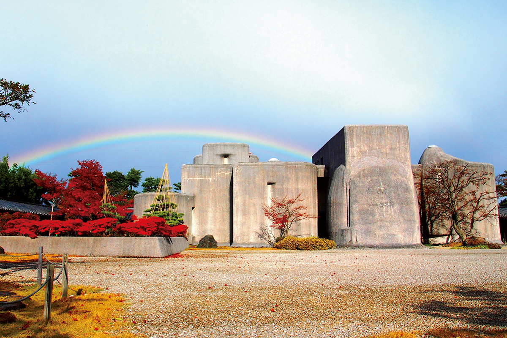
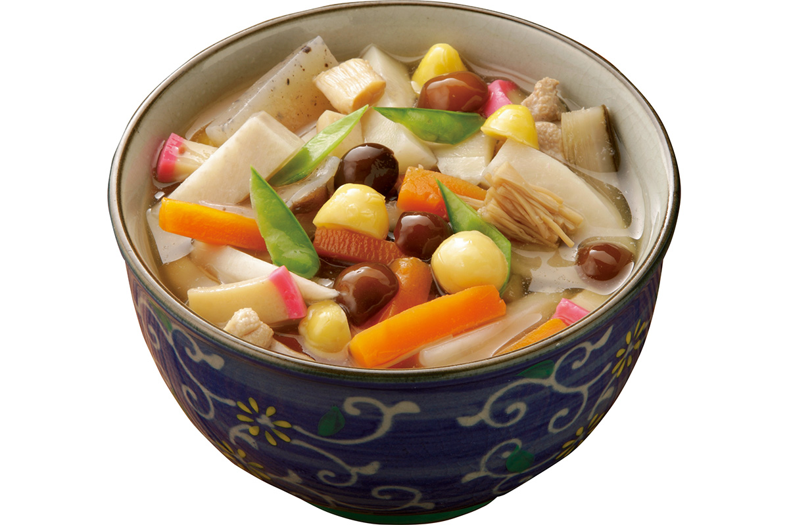
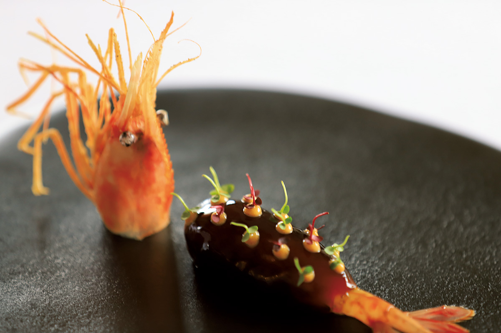
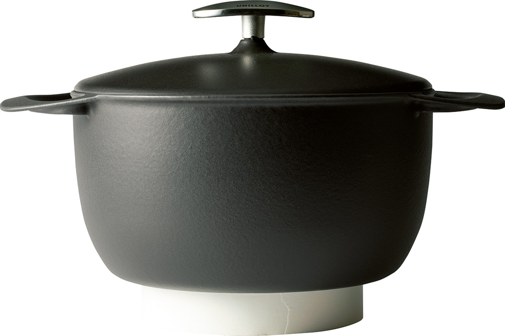
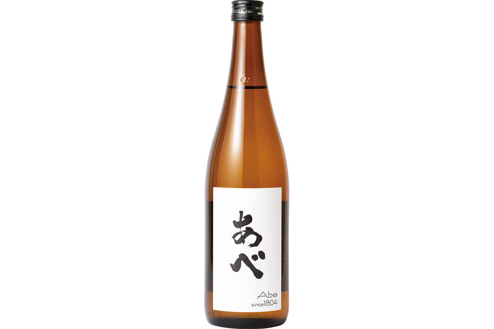
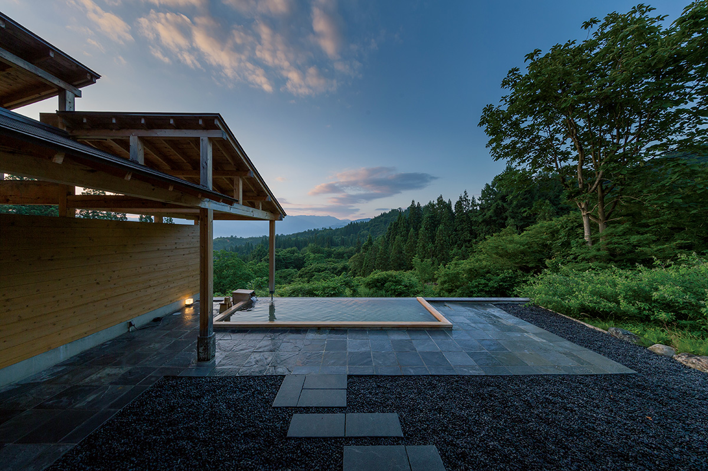

Префектура Ниигата
Ниигата: снег, рис и посуда, которую делают руками

Рисовые террасы в Токамати стоят ступенями по склону: вода в них отражает утренний свет.
Здесь выпадает столько снега, что о нём пишут в учебниках, здесь делают лучший рис и посуду для всей страны, а на горных террасах рис растёт прямо над облаками. Рассказываем, за чем ехать в префектуру Ниигата.
О префектуре
Город, который живёт металлом
Ниигата вытянута вдоль Японского моря и делится на четыре части: нижнюю, среднюю, верхнюю и остров Садо. Это одна из самых снежных префектур страны, хотя на побережье и в низинах, например в городе Ниигата, снега выпадает немного.
В эпоху Сэнгоку, то есть в XVI веке, эти земли объединил полководец Уэсуги Кэнсин. В эпоху Эдо, с XVII века, край разделили между несколькими княжествами, и следы той поры видны до сих пор.
В центре префектуры лежит район Цубамэ-Сандзё: это составное имя городов Цубамэ и Сандзё, где собрались мастера по ножам, металлической посуде и столовым приборам. Каждый год здесь проходит праздник «Цубамэ-Сандзё, фестиваль заводов»: десятки мастерских одновременно открывают двери, и любой может посмотреть, как рождается вещь.
В 1992 году у префектуры появился ещё и символический знак: он изображает Ниигату как «передний край Японского моря» и говорит о том, что здешняя культура открыта миру.
Что посмотреть
Рисовые поля, поднимающиеся к небу
Террасы в Токамати
В городке Токамати склоны холмов покрыты рисом: поля спускаются ступенями, и вода в них держит небо. Террасы района Мацудай-Мацунояма попали в список «ста лучших сельских мест Японии», и здесь каждый сезон выглядит по-новому.
- Телефон
- +81 25-597-3442
- Справки
- туристическое бюро Мацудай-Мацунояма
Что ещё посмотреть
- Ущелье Киёцу, глубокое ущелье с отвесными стенами, куда ведёт тоннель пешеходной тропы
- Замок Такада, крепость с высокими валами, весной её окружает цветущая сакура
- Рудник золота на Садо, старый золотой рудник на острове Садо
Праздники
Микоши, который связывает два района
Праздник в Дзёэцу
Праздник идёт в два приёма: сначала в районе Такада, потом в Наоэцу. Один паланкин микоши, то есть переносное святилище, в котором во время праздника «перевозят» божество, по очереди проходит через оба района. В последний день по улицам выезжают девятнадцать праздничных платформ.

- Период
- каждый год в июле
- Место
- город Дзёэцу, районы Такада и Наоэцу
Другие праздники
- Праздник Ниигаты, городское шествие по главной улице
- Праздник в Нагаоке, летний фейерверк, один из самых известных в Японии
- Праздник в Камбаре, старинный праздник в восточной части префектуры
Музеи и архитектура
Музей, где дерево встречается с камнем
Музей Тамуры
В музее показывают работы Савада Масахиро, скульптора, который вырезал из дерева. Здание в виде нескольких округлых объёмов придумал архитектор Мурано Того, а рядом разбит японский сад, который стоит осмотреть отдельно.

- Адрес
- 2-1-13 Kyogamine, Itoigawa, Niigata
- Телефон
- +81 25-552-9277
- Сайт
- gyokusuien.jp
Что ещё посмотреть
- Музей искусств города Ниигата, городское собрание живописи
- Дом памяти администрации префектуры, старое здание с историей края
- Зал «Лирик-холл» в Нагаоке, концертный зал, известный своей акустикой
Местная кухня
Суп, без которого не обходится Новый год
Ноппэй-дзиру
Ноппэй-дзиру это густой суп из курицы, корнеплодов и конняку, то есть плотного желе из растения конняку. На Новый год и в поминальные дни его варят почти в каждом доме. Набор овощей и мяса в разных семьях и районах свой, и точного рецепта здесь нет.

Что ещё попробовать
- Хэги-соба, гречневая лапша, которую подают связками на плоском блюде
- Ваппа-мэси, рис с рыбой и овощами, приготовленный в деревянной кадке
- Ваппа-ни, суп в деревянной кадке с мисо и рыбой
Где поесть
Французский ресторан в рисовом поле
Ресторан UOZEN
Ресторан стоит посреди полей, в старом японском доме, а кухня здесь французская. Продукты шеф добывает сам: выращивает овощи, ловит рыбу, ходит на охоту, и каждая тарелка собирается из того, что есть в этот день.

- Адрес
- 1-10-69-8 Higashiosaki, Sanjo, Niigata
- Телефон
- +81 256-38-4179
- Время работы
- с 11:30 до 15:00, последний заказ в 13:00, и с 17:30 до 23:00. В воскресенье и праздники с 11:30 до 15:00 и с 18:00 до 22:00
- Выходные
- понедельник и другие дни по обстоятельствам
- Сайт
- uozen.jp
Ремёсла
Самый лёгкий чугунный котёл в мире
Эмалированный котёл UNILLOY
Завод Сандзё-Токусю делает чугунные котлы с эмалью, то есть со стекловидным покрытием, которое не боится кислоты и не впитывает запахи. Модель UNILLOY называют самым лёгким котлом такого типа: стенка вдвое тоньше обычной и составляет от 2 до 2,5 миллиметра.

- Телефон
- +81 120-39-5261
- Сайт
- unilloy.com
Что привезти
Сакэ, которое пьётся долго
Дзюнмай-сю от Абэ-сюдзо
Дзюнмай-сю это сакэ, которое делают только из риса, воды и закваски, без добавления спирта. Завод Абэ варит его из риса, выращенного в Ниигате, и держит ровный баланс между вкусом риса и кислотностью, поэтому бутылку легко выпить до конца. Бутылка 720 миллилитров стоит 1650 иен.

- Телефон
- +81 257-22-4317
- Сайт
- abeshuzo.com
Где остановиться
Дом с горячим источником среди холмов
Сатояма Дзюдзё
Этот отель с горячим источником стоит в холмистой деревне. Здесь не только ночуют: хозяева придумали десять тем, по которым гостям предлагают попробовать местную жизнь, а в 2014 году отель получил премию «Гуд дизайн».

- Адрес
- 1209-6 Osawa, Minamiuonuma, Niigata
- Телефон
- +81 25-783-6777
- Комнат
- 13
- Цена
- от 26 600 иен за ночь с завтраком, налог не включён, обслуживание включено
Местный диалект
Как здесь говорят «очень вкусно»
- бака умнэ нэккаочень вкусно
- ёо кинаттадобро пожаловать
- соно рёри-но адзи надзиранэкак вам вкус этого блюда
Рекорды
В чём Ниигата первая в стране
- №1 столовые ножи, ложки и вилки: первое место по отгрузке
- №2 грибы намэко: первое место по производству
- №3 низкий уровень разводов: первое место в стране
Вопросы и ответы
Что ещё спрашивают о Ниигате
Что необычного кладут в ниигатский толстый ролл?
Грецкие орехи. В обычный толстый ролл идут омлет, тыква-кампё и огурец, а здесь добавляют орехи, приготовленные с соевым соусом и сахаром. Так ролл становится сытнее, а вкус получает новую нотку.
Что значит «атикотанээ» на говоре уезда Юдзава?
«Ничего особенного», «всё в порядке», «не стоит волноваться». Так говорят в Юдзава и районе Уонума. Префектура большая, и в каждом районе свои слова, поэтому жители разных её частей иногда не понимают друг друга.
Справочник
Ниигата в цифрах
| Центр префектуры | город Ниигата |
| Города и посёлки | 20 городов, 6 посёлков, 4 деревни |
| Площадь | 12 584 кв. км |
| Население | 2,25 миллиона человек |
| Плотность населения | 178,5 человека на кв. км |
| Туристов за год | 8,19 миллиона |
| Дерево префектуры | юкицубаки |
| Цветок префектуры | тюльпан |
| Птица префектуры | ибис-току |
| Средняя температура | +14,3 |
| Максимум | +31,7 |
| Минимум | минус 1,6 |
| Осадки | 1796 мм |
| Ясных дней | 12 |
| Дождливых дней | 173 |
| Снежных дней | 79 |
| Онсэнов | 144 |
| Гостиниц и рёканов | 2140 |
| Музеев искусств | 31 |
| Музеев | 38 |
| Митиноэки, придорожных станций | 37 |
| Национальных сокровищ | глубокий сосуд, найденный на стоянке Сасаяма, всего 1 |
| Важных культурных ценностей | 85 |
| Исторических мест | 32 |
| Природных памятников | 35 |
| Национальные парки | Одзэ, Дзёсинэцу-Когэн, Бандай-Асахи и другие, всего 7 |
Природные памятники
- Ибис-току, птица, которую здесь разводят заново после полного исчезновения в природе
- Сакура у храма Оги, старое дерево, цветение которого ждёт вся округа
- Ущелье Киёцу, глубокий каньон с отвесными стенами
- Место находок жадеита у реки Котаки, берег, где находят зелёный камень жадеит
- Кедр Сёгун, огромное старое дерево